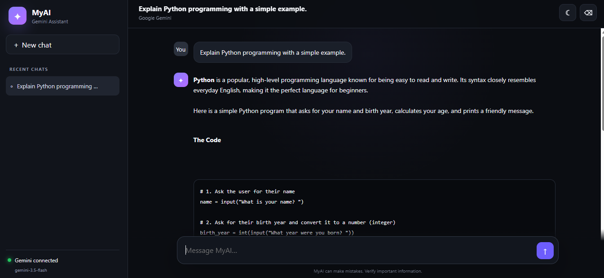
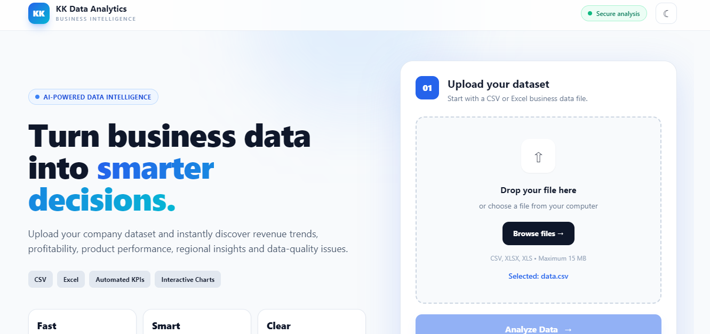

01
01 OPEN TO OPPORTUNITIES
01 / DEVELOPER PORTFOLIO
I build useful digital products.
Developer focused on web applications, Python, AI/ML and practical software solutions. I turn ideas into clean, responsive products with a strong attention to usability.
PROFILE_MODULE[ ONLINE ]
KK / DEV
CURRENT FOCUS
Web + AI + Data
Building practical interfaces, APIs, AI workflows and analytics experiences.
ReactPythonFastAPIAI/ML
04
PROJECTS
08
CORE SKILLS
24/7
BUILD MODE
02 / ABOUT
Developer mindset. Built for impact.
I enjoy working at the intersection of product thinking and implementation — shaping interfaces, wiring APIs, working with data, and experimenting with AI-powered experiences.
My focus is simple: make software useful, understandable and responsive, then keep improving it through iteration.
01
WEB
02
PYTHON
03
AI / ML
04
DATA
03 / STACK
Tools I use to make things.
PY
01Python
Backend • AI/ML
JA
02JavaScript
Frontend • Web
HT
03HTML
Structure • Semantics
CS
04CSS
UI • Responsive
TA
05Tailwind CSS
Utility-first UI
FA
06FastAPI
Python APIs
MY
07MySQL
Database
JA
08Java
Application Development
04 / SELECTED WORK
Projects with purpose.
01
02
03 04
04PROJECT_04
Reliance Mall Web App
A responsive educational web application built to work smoothly across desktop and mobile layouts.
HTMLCSSJavaScript
05 / EXPERIENCE
Where I've grown.
2026
AI & Machine Learning Intern
Arpina Solutions Pvt Ltd
Worked with Python, data processing, exploratory data analysis and artificial intelligence concepts while building practical technical skills.
2026
Frontend Development Training
Hitech Solutions
Practiced HTML, CSS and JavaScript while developing responsive websites and strengthening frontend development fundamentals.
06 / CREDENTIALS